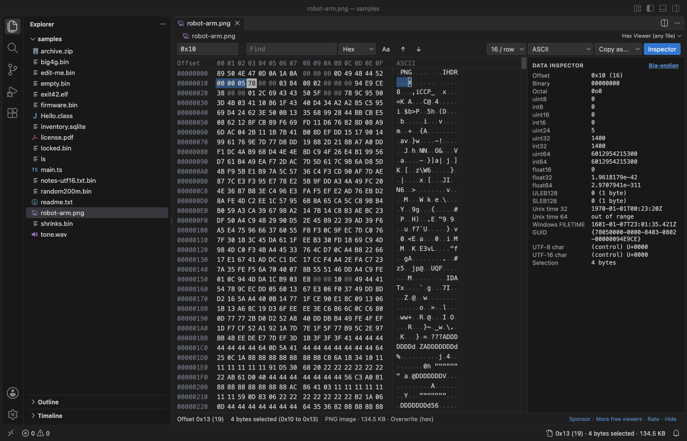

Open files in VS Code and Cursor / Binary, network and hardware
Copy bytes from a binary file as a C array or Python bytes
To put part of a binary file into source code, you need the bytes as text in the syntax of your language. Hex Viewer opens any file in VS Code, and its Copy as menu turns the selected bytes into a C array, a Python bytes literal, base64, hex or text, up to 32 MB at a time. A C array comes out as unsigned char firmware[16] = { with 12 bytes such as 0x89, 0x50 on each line. Copy as is free. Zovo Pro (USD 19 once) adds tools such as Extract Strings and checksums, with 3 free tries each.
Free, MIT license. Extension ID zovo.zovo-hex-viewer, version 0.3.11. Needs VS Code 1.90.0 or newer.

Steps in VS Code
- Install Hex Viewer from the Marketplace, or press Ctrl+P (Cmd+P on macOS) and run
ext install zovo.zovo-hex-viewer. - Right-click the file in the Explorer and pick "Open in Hex Viewer". Files ending in
.bin,.dat,.img,.rom,.dmpor.dumpopen in it when you click them. - Press Ctrl+G (Cmd+G on macOS) and type the start offset, such as
0x100. - Select the bytes with Shift and the arrow keys or with a drag. Ctrl+A selects the whole file. The status line shows how many bytes are selected.
- Open the Copy as menu in the toolbar and pick C array, Python bytes, Base64, Hex (4A5B), Hex with spaces (4A 5B), Text (UTF-8) or Text (Latin-1).
- Paste into your source file. The C array is named after the file, so
firmware.bingivesunsigned char firmware[...]. Python bytes come out asb'\x89\x50...', every byte as\xand two hex digits.
Where Zovo Pro saves time
Copy as, Ctrl+C, go to offset, find, the data inspector, editing with insert and delete, and the byte by byte compare of two files are free, with no sign-in. Only the rows on screen are read, so a 4 GB file opens at once.
If the bytes you are after are text, such as error messages, keys or version strings in a firmware image, Extract Strings lists every ASCII and UTF-16 string of the file with its offset, in one pass, so a 4 GB file works. You can filter the list, jump to a string in the hex view, or export all strings as CSV or text. The other Pro tools give checksums of a selection or file, an entropy map with a byte histogram, nested template fields, bookmarks, a compare report and a search for bytes in many files.
With Extract Strings (Zovo Pro)
- Right-click the file in the Explorer and pick "Zovo Pro: Extract Strings", or run "Hex Viewer Pro: Extract Strings (Pro)..." from the Command Palette.
- Type to filter the list. Pick a string to open it selected in the hex view, or export the strings as CSV or text.
- A try counts when the list shows.
Extract Strings works 3 times on your computer before it asks for a license, and a try counts only when you get a result. Opening a file shows no popup and no countdown.
Zovo Pro costs USD 19 once. It is not a subscription, and it turns on the Pro tools in every Zovo extension, not only Hex Viewer. After a card payment (Stripe) your license key shows on the next page. In VS Code, run "Zovo Pro: Enter Zovo Pro license key" from the Command Palette and paste it. The key is checked on your computer, with no network call. With GitHub Sponsors, pick the "$19 one time" tier, then run "Zovo Pro: I already paid: unlock with GitHub Sponsors" and sign in with the same GitHub account. With PayPal, send USD 19 with "Zovo Pro" in the note and the key comes by email within a day.
A team of 5: USD 59 once, by card or by PayPal. Every rule and every Pro tool is on the Zovo Pro page.
Steps in Cursor, Windsurf or VSCodium
- Open the Extensions view with Ctrl+Shift+X (Cmd+Shift+X on macOS).
- Search for
zovo.zovo-hex-viewerand click Install. Cursor, Windsurf and VSCodium install from Open VSX, where it is published aszovo/zovo-hex-viewer. - If your editor has no gallery, download the .vsix from the Open VSX page and run "Extensions: Install from VSIX...".
- Then use it the same way as in VS Code.
What Hex Viewer handles
- Files of any size. A 4 GB file opened in 0.6 s in the release check.
- Copy as C array, Python bytes, Base64, Hex, Hex with spaces, UTF-8 text and Latin-1 text.
- Pasting hex back in, such as
4A 5B 00,0x4A, 0x5Bor\x4a\x5b. - A text column in ASCII, Latin-1, UTF-8, UTF-16 or EBCDIC, and 8 to 64 bytes per row.
What it does not do
- Copy as works up to 32 MB per selection. The viewer says so when a selection is larger.
- The C array uses
unsigned charand the file name. Change the type or name after you paste. - Files on remote and virtual file systems open up to 256 MB (setting
hexViewer.maxRemoteMB).
Other options
- xxd. Comes with Vim and macOS.
xxd -i -s 0x100 -l 64 firmware.binprints 64 bytes from offset 0x100 as a C array. - Python.
open("firmware.bin", "rb").read()[0x100:0x140]gives the same bytes as a Python bytes object.
Install counts and Open VSX status were checked on 13 November 2026. Descriptions in quotes are the extensions' own.
Questions
How do I select a run of a known length?
Press Ctrl+G, type the start offset, then hold Shift and move right. The status line shows the number of bytes selected.
What does Ctrl+C copy?
Hex with spaces from the hex column, or text from the text column. The setting hexViewer.copyFormat changes the hex format.
Can I paste a C array back into the file?
Yes, the list of bytes. Ctrl+V reads hex such as 0x4A, 0x5B and writes those bytes at the cursor. Leave out the declaration line. Ctrl+S saves.
Does it work in Cursor or Windsurf?
Yes. Cursor, Windsurf and VSCodium install extensions from Open VSX. Search for the extension in their Extensions view and install it there.
More about Hex Viewer
Read the Hex Viewer page for every feature and setting, or the source code on GitHub.
Related guides
- Hex Viewer & Binary Viewer on the VS Code Marketplace (also on Open VSX). Opens any file as hex, edits bytes and compares two files, even files of many GB.
- Use a hex editor in VS Code
- Open a binary file in VS Code
- Read binary files with templates in a VS Code hex editor
- A 010 Editor alternative inside VS Code
Zovo Pro and support
Zovo Pro: USD 19 once, every Zovo viewer. It turns on the Pro tools in this extension and in the other Zovo extensions you use. The free features stay free.
After a card payment your license key shows on the next page. Paste it with the command "Zovo Pro: Enter a key".
You can also support the work with no Pro:
Need your format supported?
Open a format request with a sample file, and I reply there whether it can be done. For USD 299 once, through this GitHub Sponsors tier, I add your file format or a missing feature to this extension, with tests, within 7 days.